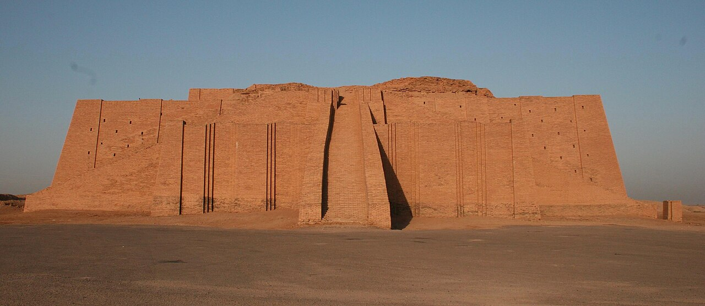
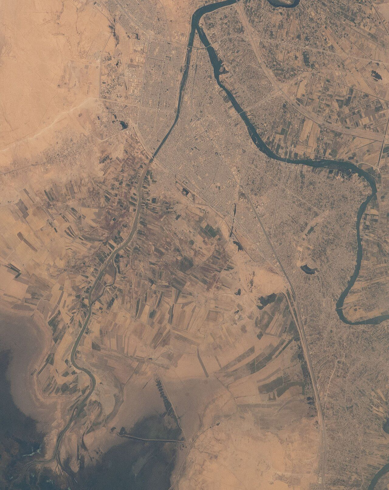
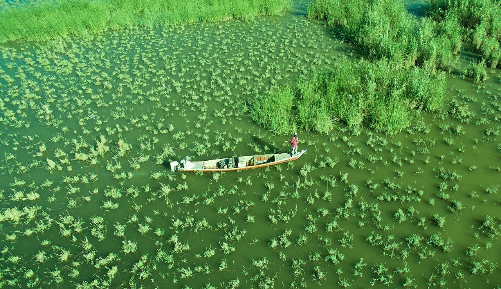
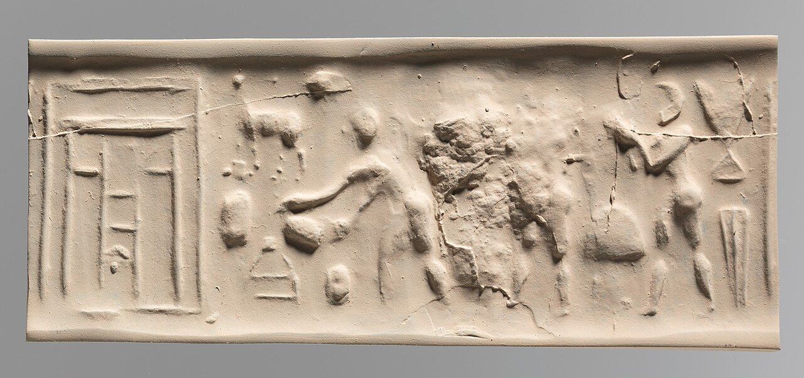
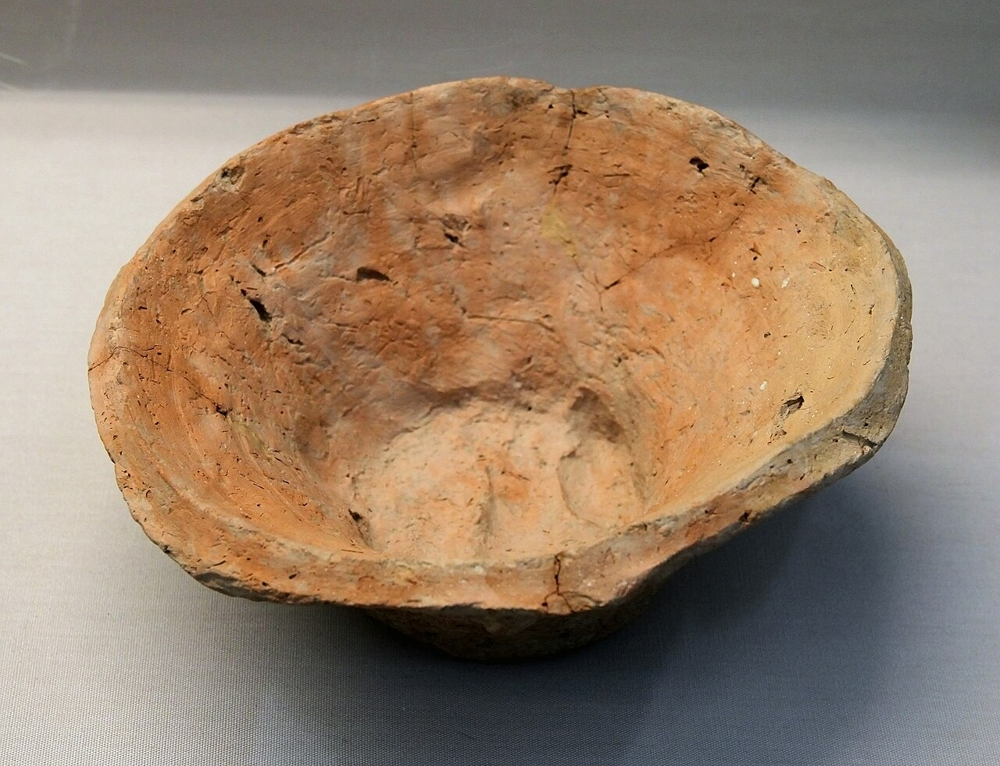
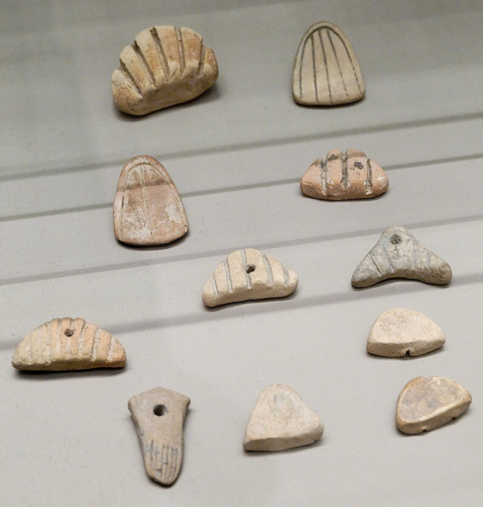
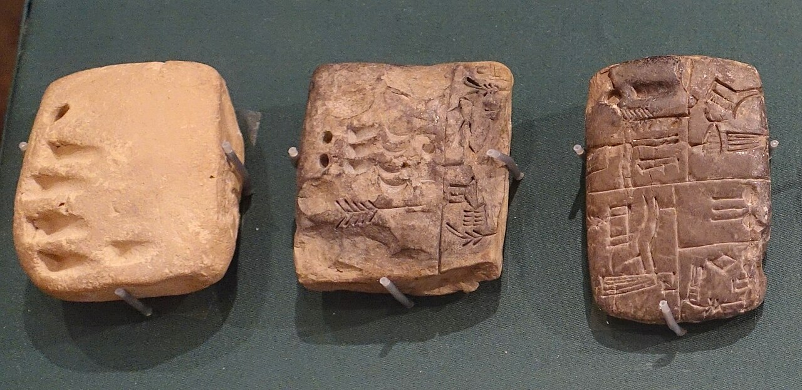
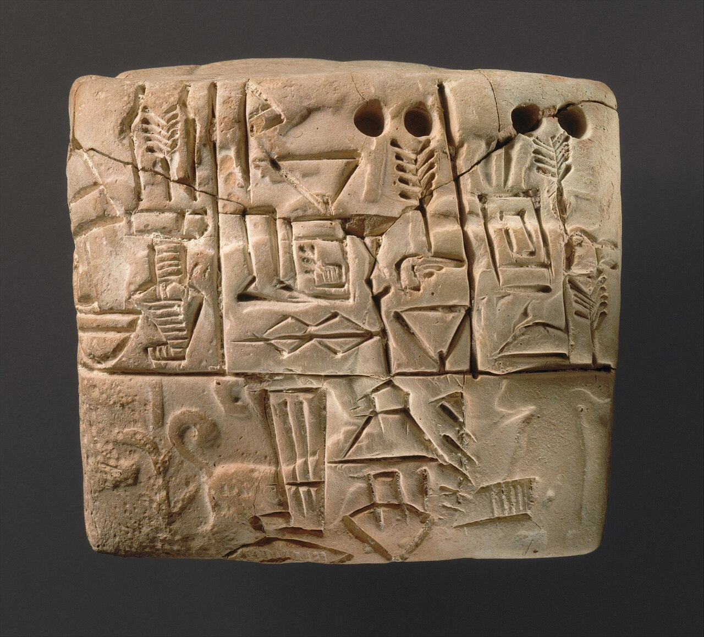

歴史・地理 History & Geography最初の文明は、 なぜ大きな川の そばで生まれた？ 人類の最初の畑は雨だけで麦が育つ北の山のふもとにあったのに、最初の大きな都市は、雨のほとんど降らない南の川辺に生まれました。そのわけは、洪水と水路、余った麦、粘土板の帳簿にあります。世界史の第1話、川から文明が生まれるまでを、地図と図でたどってみませんか。
2026.11.09 UP 約8分で読める 文：SOMOSOMO編集部
写真：ウルのジッグラト（前21世紀・約4,000年前。ウルクの繁栄より約1,000年あと。正面と階段は1980年代の修復）／Tla2006（2006年、パブリックドメイン）
イラク南部の乾いた平地に、いまはワルカと呼ばれる遺跡があります。ここが、古代の都市ウルク の跡です。前3100年ごろ（紀元前3100年ごろ。いまから約5,100年前）には最大で5万人ほどが住み、当時の世界でいちばん大きな都市 だったと考えられています。
人類が麦を育て始めたのは、その5,000年以上前。最初の畑は北の山のふもと、いまのトルコやシリアのあたりで、雨だけで麦が育つ土地でした。ところが最初の大きな都市は、雨がほとんど降らない南の川辺に生まれます。雨に恵まれた土地ではなく、なぜ川のそばだったのでしょうか。
この川辺は、人類の歴史が文字で記録に残りはじめる場所でもあります。全36話でたどる世界史の流れを、ここから始めましょう。
In a word
川の水で麦が余るほど とれ、その余りが都市と仕事を生んだから。
01
Four Rivers
文明は、 大河のほとりに 並んでいた
地図を広げてみましょう。メソポタミアのティグリス川とユーフラテス川、エジプトのナイル川、パキスタンのインダス川、そして中国の黄河。日本の教科書では、これらの川のそばで生まれた文明を「四大文明」と呼んできました。
Fig.01 4つの大河と、 最初の都市ウルク
4つの大河と、文明が現れたおよその年
メソポタミア
前3500年ごろ
ナイル川
前3100年ごろ
インダス川
前2600年ごろ
黄河
前1900年ごろ
拡大図：メソポタミア（いまのイラク）
ティグリス川
ユーフラテス川
いまのバグダッド
ウルク
ウル
ペルシア湾
いまのモースル
このあたりから北は、
雨だけで麦が育つ
南：雨は年200mm未満
見どころは、4つの文明がどれも大河にそって生まれ、メソポタミアがいちばん早いこと。年はおよその時期で、諸説あります。川筋と海岸線はいまのもので、当時のユーフラテス川はウルクのそばを流れ、ウルは河口に近い町でした。地図：Natural Earth（パブリックドメイン）をもとに編集部が作成。
いちばん早いのはメソポタミアで、ほかはそれより数百年から1,000年以上あとです。たとえば黄河の流域に、最初の国家とされる二里頭（にりとう）が現れるのは前1900年ごろです。
なお「四大文明」は日本や中国での呼び方です。英語では「文明のゆりかご」と呼び、南米ペルーのカラルなど、アメリカ大陸の文明も数えます。それでも、最初期の大きな都市の多くが大河のそばにあったのは確かです。それはなぜか。いちばん早かったメソポタミアで見ていきましょう。

川にそってだけ、畑が広がる 国際宇宙ステーションから見た、イラク中部のユーフラテス川（右の、大きく曲がる濃い線）。上の灰色の格子は町（ラマーディー）、左の水路ぞいの縞が畑で、その外は色の薄い乾いた土地です。写真：View of Iraq - Euphrates - Ramadi ／NASA ジョンソン宇宙センター（2022年、パブリックドメイン）
02
Gift and Trouble
川は恵みだが、 水の来る時期が 悪かった
メソポタミアは、ギリシャ語で「川のあいだの土地」という意味です。北の山から流れてくる2本の川が、平らな低地を通ってペルシア湾に注ぎます。南部の雨は1年に100mmあまり（ウルクに近いサマーワで約106mm）。東京（平年で約1,600mm）の15分の1ほどです。
雨だけでは麦は育ちません。それでも、川が運んできた泥で、土はよく肥えていました。泥が積もって川底と岸が少しずつ高くなり、川はまわりの平地より高いところを流れています。岸を切って溝を掘れば、水は低いほうへ自然に流れ、畑をうるおしました。
川が海に近づくあたりには、葦（あし）の茂る広い湿地もありました。魚や鳥がとれ、葦は家や舟の材料になります。畑の麦のほかに、暑さに強いナツメヤシの実もとれました。

いまも残る、南の湿地 イラク南部チバーイシュの湿地で、細長い小舟を竿で進める人。奥に見える背の高い草が葦です。ウルクの人々も、こうした水辺の恵みを使っていました（写真はイメージです）。写真：Chibaish Marches, Iraq ／作者不明（2016年、CC0）
ただし、この2本の川には困ったくせがありました。山の雪がとける春に、水が一気に増えます。増えるのはティグリス川が4月、ユーフラテス川が5月ごろ。ちょうど、秋にまいた大麦を刈り入れる時期にあたります。
Fig.02 川の水と、 麦の1年 （模式図）
（月） 9 10 11 12 1 2 3 4 5 6 7 8 川の水 大麦 畑の水 種まき
育つ
収穫
畑に水を引きたい時期
水がいちばん多いのは、収穫のころ 水がほしい秋から冬は、川の水が少ない
見どころは、赤い点線の枠。川の水がいちばん多い4〜5月が、麦の収穫と重なります。反対に、畑に水がほしい秋から冬は、川の水が少ない時期です。水の量は高さだけを示した模式で、年によって大きく変わります。
そこで人々は、春の大水から畑を守る堤防を築き、水の少ない季節にも畑へ水を回す水路を掘りました。水路は川の泥ですぐに浅くなるので、毎年さらい直さなければなりません。1つの家族では手が回らず、大勢で力を合わせるしくみ が必要になりました。
「大きな水路を管理するために、強い王や国が生まれた」という説もあります。ウィットフォーゲルが1957年に唱えたこの説は、のちに考古学者から批判を受けました。メソポタミアでは、大がかりな水路より先に都市や国ができていたとわかってきたからです。
水路のために国ができた、とまでいうのは言いすぎでも、水路を掘り、泥をさらうには大勢の協力が要りました。
水路には弱点もありました。乾いた土地では、まいた水が蒸発するときに畑に塩を残します。南メソポタミアでは、塩に弱い小麦から、塩に強い大麦へと作物を切りかえていった、という説があります。
03
Surplus
余った麦が、 畑に出ない人を 養った
水路の引かれた畑では、大麦がたくさんとれました。1つの家族が食べる分をこえて、余り が出るようになります。この余りが、人々の暮らし方を大きく変えていきました。
Fig.03 川の水から、 文字が生まれるまで
WATER 川の水を畑に引く 堤防と水路で、雨の少ない土地でも麦を育てる SURPLUS 麦が余る 家族が食べる分より多くとれるようになる TEMPLE 神殿に集める 余った麦を町の中心に集め、働く人に配る CITY 専門の仕事が生まれる 職人・神官・役人が集まって住み、都市になる WRITING 記録が必要になる 麦や家畜の出し入れを書きとめるため、文字が生まれる
見どころは、1つ前の段がないと次の段が起こらないこと。水がなければ余りはなく、余りがなければ専門の仕事も記録もいりません。ウルクで起きたことを、5つの段に分けて単純にした図です。
余った麦は、町の中心にある神殿に集められました。ウルクの「白い神殿」は、高く盛った土台の上に建っていました。この形が、のちに階段状の塔「ジッグラト」へ発展します。扉の写真は、約1,000年あとの前21世紀（約4,000年前）に、近くの町ウルに建てられたジッグラトです。

神殿の前の場面 石の筒に彫った絵を、粘土の上で転がして写す「円筒印章」の跡です。左はしに神殿の正面が刻まれ、その前で儀式をする場面とされます。神殿が町の暮らしの中心だったことがうかがえます（前3500〜前3100年ごろ、メトロポリタン美術館所蔵）。写真：Cylinder seal and modern impression: ritual scene before a temple facade ／メトロポリタン美術館所蔵（前3500〜前3100年ごろの作品、CC0）
神殿は、集めた麦を働く人たちに配りました。麦をもらえれば、畑に出なくても暮らせます。土器を作る職人、布を織る人、金属を扱う人、神に祈る神官、そして麦の出し入れを見張る役人。専門の仕事 がこうして生まれ、人が集まって町が大きくなりました。
ウルクの時代の遺跡からは、ふちが斜めに切れた粗い鉢が山のように見つかり、出てくる土器の約4分の3を占めるともいわれます。型で大量に作ったとみられ、働く人に麦を量って配る器だったという説が有名です（パンを焼く型という見方もあります）。

麦を配った器？ ふちが斜めの鉢（英語でベベルド・リム・ボウル）。北メソポタミアのニネヴェで見つかった、前3300〜前3100年ごろのものです。ふちは斜めに切れ、表面は粗いままです（大英博物館所蔵）。写真：Beveled rim bowl, Nineveh, Late Uruk Period ／Vassil（2019年撮影、CC0）
やがて、神殿とは別に、戦いを率いる王が力を持つようになります。前2900年ごろからは、ウルクやウルなど、それぞれ王をいただく「都市国家（1つの都市とまわりの村からなる小さな国）」が並びました。
都市国家どうしは畑や水をめぐって争いをくり返し、力を握る都市は次々に入れ替わっていきました。
04
The First Ledgers
最初の文字は、 詩ではなく 帳簿だった
人が増え、出し入れする麦や家畜が増えると、頭で覚えておくのは難しくなります。メソポタミアでは、もっと前から、小さな粘土の粒（トークン）で数を数えていました。円すいや球などの形で、品物の種類と数をあらわしたと考えられています。
やがて、粘土の板に数の印を押しただけの「数の板」が現れ、そこに品物をあらわす絵のような記号が加わっていきました。トークンの形が文字のもとになった、という説は、フランス生まれのアメリカの研究者が唱えたもので、いまも広く知られています。

数を数えた粘土の粒 スサ（いまのイラン南西部）で見つかった、刻み目のある複雑なトークン（ルーヴル美術館所蔵）。形や刻み目の違いで、品物の種類を区別したと考えられています。写真：Clay accounting tokens, Susa ／Marie-Lan Nguyen（2009年撮影、パブリックドメイン）

数の板から、文字の板へ 左から、数の印だけの板、数の印に絵のような記号が加わった板、そして原始楔形文字の板です。左から右へ、記号がしだいに増えていきます（シカゴ大学東洋研究所所蔵、ウルク期の終わりごろ）。写真：Numerical and proto cuneiforms tablets ／Daderot、Zunkir（2014年撮影、CC0）
こうして前3300年ごろ、ウルクで世界で最も古い文字の1つが生まれました。とがった道具で粘土に記号を刻んだもので、のちの楔形（くさびがた）文字のもとになったことから「原始楔形文字」と呼ばれます。粘土板はおよそ5,000枚見つかっていて、多くはウルクから出たものです。
そのうち約85%は、事務の記録でした。書かれているのは、大麦やビール、羊の数、それに働く人と、配った量です。残りの約15%は、職業や動物、品物の名前を並べた「単語の一覧」で、書き手が字を学ぶための教材だったとみられます。物語や詩が書かれるのは、数百年あとのことです。
書く材料の粘土は、川辺ならどこでも手に入ります。乾けば固まり、火事で焼ければかえって丈夫になりました。5,000年前の帳簿がいまも残っているのは、川の泥のおかげ でもあります。

大麦を配った記録 前3100〜前2900年ごろの粘土板で、大麦の配分を記した帳簿とされます。上のほうの丸いくぼみは、数をあらわす印です。表面には、男の人と猟犬、イノシシを彫った円筒印章を転がした跡も残っています（メトロポリタン美術館所蔵）。写真：Administrative account of barley distribution ／メトロポリタン美術館所蔵（前3100〜前2900年ごろの作品、CC0）
川の水が麦を余らせ、余りが専門の仕事と町を生み、町の帳簿が文字を生んだ。最初の文明は、1本の鎖のようにつながって 生まれたのです。その鎖の最初の輪が、雨の代わりに水をくれる大きな川でした。
05
By the Numbers
数字で見る 最初の都市
約 9km 前3000年ごろ、ウルクのまわりに築かれた城壁の長さ。山手線の約4分の1にあたる英語版 Wikipedia「Uruk」
2,000 原始楔形文字で知られている記号の、およその数。いまの常用漢字（2,136字）とほぼ同じ英語版 Wikipedia「Proto-cuneiform」
4,000年 粘土のトークンが、形をほとんど変えずに使われ続けた、およその期間英語版 Wikipedia「Bulla (seal)」
Here's the Fun Part
ここが面白い！名前の残る 最も古い人は、 麦の係だった かもしれない
ウルクの時代の粘土板には、「クシム」という名前が何度も出てきます。これまでに少なくとも18枚の粘土板で確かめられています。そのうち1枚には、37か月で大麦2万8,086単位 とあり、最後にクシムの名が署名のように添えられています。
この粘土板を所蔵するノルウェーの個人コレクションの解説では、2万8,086単位はリットルに直して13万4,813リットル。ウルクのイナンナ神殿でビールをつくるための記録とされます。クシムは、その麦の出し入れを任された係だったのでしょう。
クシムが人の名前なのか、役職の名前なのかは、まだはっきりしていません。けれども、もし人の名前なら、文字で名前が残った最も古い人物 の1人ということになります。歴史に最初に名を刻んだのは、王でも英雄でもなく、麦の数を数えていた人だったのかもしれないのです。
次に買い物のレシートを受け取ったら、5,000年前のウルクで、粘土に麦の数を刻んでいた書き手のことを思い出してみてください。
To be continued
メソポタミアの人々は、収穫のころに来る大水と毎年向きあいました。ところが、西のエジプトのナイル川は違います。夏に水が増えて秋に引き、そのあとの湿った畑に種をまけばよかったのです。暦に合わせて来てくれる川のほとりで、エジプトの王国は3,000年も続きました。なぜ、それほど長く続けられたのでしょうか。
出典・参考
Uruk （英語版 Wikipedia）：遺跡の現在の名前ワルカ、前3100年ごろに最大で5万人ほどが住み当時世界最大の都市だったこと、遺跡がユーフラテス川の昔の川筋にあること、エアンナ地区とアヌ地区、白い神殿、前3000年ごろの約9kmの城壁Proto-cuneiform （英語版 Wikipedia）：ウルクIV期（前3350〜前3200年ごろ）の始まり、およそ5,000枚の粘土板、事務の記録が約85%・単語の一覧が約15%、記録された品物（大麦・ビール・羊・働く人）、トークンと数の板からの発展、約2,000の記号Kushim (Uruk period) （英語版 Wikipedia）：「37か月で大麦28,086単位」の粘土板（MS 1717）、少なくとも18枚の粘土板に名があること、人名か役職名かは不明、文字に残る最も古い人名の候補であることMS 1717: Beer production at the Inanna Temple in Uruk （Schøyen Collection）：37か月で大麦134,813リットル、イナンナ神殿のビールづくりの記録とする解説Agriculture in Mesopotamia （英語版 Wikipedia）：南部はほとんど雨が降らず灌漑に頼ったこと、塩害で小麦から大麦に移ったという説、春の増水（ティグリス川は4月、ユーフラテス川は5月）と収穫の重なり、10〜11月の種まきと4〜5月の収穫、泥で川が平地より高くなり溝を切れば水が流れたこと、ナツメヤシBevelled rim bowl （英語版 Wikipedia）：ウルク文化の遺跡の土器の約4分の3を占めるといわれること、型で作られたとみられること、配給の器という説とパンを焼く型という説Bulla (seal) （英語版 Wikipedia）：粘土のトークンの用途と、約4,000年ほとんど変わらずに使われたこと、トークンから文字が生まれたとするデニース・シュマント＝ベッセラ（フランス生まれのアメリカの考古学者）の説Cradle of civilization （英語版 Wikipedia）：文明が独自に生まれた場所（メソポタミア・エジプト・インダス・中国・ペルーの海岸・メキシコ湾岸）、エジプトの統一（前3150年ごろ）、インダスの都市（前2600年ごろ〜）、最初の国家とされる二里頭（前1900年ごろ〜）、ペルーのカラル四大文明 （日本語版 Wikipedia）：日本や中国で使われる呼び方で、国際的には「文明のゆりかご」が使われることNeolithic Revolution （英語版 Wikipedia）：肥沃な三日月地帯で農耕が始まった時期（前1万〜前8000年ごろ）、大麦と小麦Hydraulic empire （英語版 Wikipedia）：水の管理から強い国家が生まれたとする、ウィットフォーゲルの説（1957年）と、メソポタミアでは大規模な灌漑より先に都市や国家ができていたとする考古学者の批判Mesopotamia （英語版 Wikipedia）：「川のあいだの土地」という名前の意味Ziggurat of Ur （英語版 Wikipedia）：前21世紀にウルに建てられたこと、正面と大階段が1980年代に再建されたことSumer （英語版 Wikipedia）：前2900年ごろからの初期王朝時代、王（ルガル）や支配者（エンシ）がおさめる都市国家が並び、戦いが増え、覇権が都市のあいだで移ったことStele of the Vultures （英語版 Wikipedia）：都市国家ラガシュとウンマが、境の農地をめぐって争ったことUr （英語版 Wikipedia）：ウルがユーフラテス川の河口に近い海辺の町だったことSamawah （英語版 Wikipedia）：サマーワの年間降水量 約106mmFlooding of the Nile （英語版 Wikipedia）：ナイル川が夏に増水して秋に引き、そのあとに種をまいたこと東京の平年値 （気象庁）：年間の降水量の平年値（1991〜2020年）1,598.2mm常用漢字表 （文化庁）：2,136字地図：川と陸地は Natural Earth （パブリックドメイン）のデータから作成
写真：ウルのジッグラト（Ziggurat of Ur） ／Tla2006（2006年、パブリックドメイン）。本文中の写真のクレジットは、それぞれの写真の下に記しています（いずれも CC0 またはパブリックドメイン）